정보통신기사(구) (2017-05-07 기출문제)
1과목: 디지털 전자회로
1. 다음과 같은 정류회로에 대한 설명으로 틀린 것은?
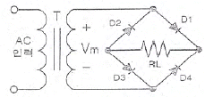
- (+) 반주기에는 D1과 D3가 On되어 정류작용을 한다.
- 고압 정류회로에 적합하다.
- Tap형 전파정류회로에 비해 정류효율이 낮고 전압 변동률이 크다.
- 중간 Tap이 있어 대형 변압기로 사용할 수 있다.
(정답률: 68%)

2. 다음 중 직류 전압 또는 직류 맥동률을 감소시키기 위한 회로가 아닌 것은?
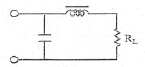
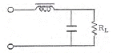
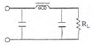
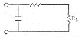
(정답률: 76%)
3. 고주파 증폭회로에서 중화 조정을 수행하는 목적은?
- 이득의 증가
- 주파수의 안정
- 전력 효율의 증대
- 자기 발진의 방지
(정답률: 62%)
4. 다음은 궤환율이 0.04인 부궤환 증폭기 회로이다. 저항 R1의 값은?
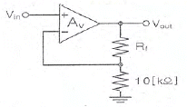
- 120[kΩ]
- 180[kΩ]
- 220[kΩ]
- 240[kΩ]
(정답률: 66%)
5. 다음과 같은 연산증폭기 회로의 출력 전압은?
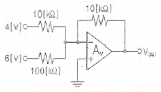
- -8.4[V]
- -4.6[V]
- -2.3[V]
- -1.6[V]
(정답률: 72%)
6. 다음 중 푸시풀(Push-Pull) 전력증폭회로의 가장 큰 장점은?
- 우수 고조파 상쇄로 왜곡이 감소한다.
- 직류성분이 없어지기 때문에 효율이 크다.
- A급 동작 시 크로스오버(Cross Over) 왜곡이 감소한다.
- 기수와 우수 고조파 상쇄로 효율이 증가한다.
(정답률: 70%)
7. 다음 회로는 빈-브릿지(Wien-Bridge) 발진회로이다. R1, R2 값이 감소할 경우 발진주파수의 변화는?
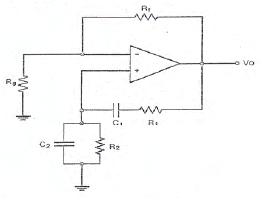
- 증가한다.
- 감소한다.
- 변화없다.
- 발진이 되지 않는다.
(정답률: 76%)
8. 병렬저항형 이상형 발진회로에서 1.6[kHz]의 주파수를 발진하는데 필요한 저항 값은 약 얼마인가? (단, C=0.01[μF])
- 2[kΩ]
- 4[kΩ]
- 6[kΩ]
- 8[kΩ]
(정답률: 58%)
9. 1,000[kHz]의 반송파를 5[kHz]의 신호주파수로 진폭 변조할 경우 출력 측에 나타나는 주파수가 아닌 것은?
- 995[kHz]
- 1,000[kHz]
- 1,0⑤[kHz]
- 1,990[kHz]
(정답률: 80%)
10. 진폭 변조차의 전압이 e=(200+50sin2π100t)sin2π×108t[V]로 표시되었을 때 변조도는 약 몇[%]인가?
- 25
- 50
- 75
- 95
(정답률: 60%)
11. 다음 중 디지털 복조에 대한 설명으로 틀린 것은?
- ASk(Amplitude Shift Keying)에 대한 복조는 비동기식 포락선 검파만을 이용한다.
- 동기 검파는 송신신호는 주파수와 위상에 동기된 국부발진 신호와 입력 신호를 곱하게 하는 곱셈 검파기이다.
- 비동기식 포락선 검파방식은 PSK(Phase Shift Keying)의 복조에는 이용되지 않는다.
- 비동기식 검파는 동기 검파보다 시스템은 간단하지만 효율이 떨어진다.
(정답률: 60%)
12. 정보 전송 기술에서 다음 그림과 같은 변조 파형을 얻을 수 있는 변조 방식은?
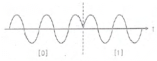
- ASK(Amplitude Shift Keying)
- PSK(Phase Shift Keying)
- FSK(Frequency Shift Keying)
- QASK(Quadrature Amplitude Shift Keying)
(정답률: 72%)
13. 다음 중 트랜지스터의 스위칭 작용에 의해서 발생된 펄스 파형에서 링깅(Ringing) 현상이 생기는 이유는?
- 낮은 주파수 성분 때문이다.
- 직류분이 잘 통하지 않기 때문이다.
- 높은 주파수 성분에 공진하기 때문이다.
- 증폭기의 저역 특성이 나쁘기 때문이다.
(정답률: 78%)
14. 다음 중 슈미트 트리거희로(Schmitt Trigger Circuit)에 대한 설명으로 틀린 것은?
- 구형파 펄스 발생회로로 사용된다.
- 비안정 멀티바이브레이터 회로이다.
- 입력전압의 크기가 출력의 On, Off 상태를 결정해 준다.
- 두 개의 안정상태를 갖는 회로이다.
(정답률: 66%)
15. RS 플립플롭 회로의 출력 Q 및
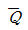
는 리셋(Reset) 상태에서 어떠한 논리 값을 가지는가?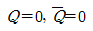
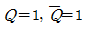
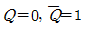
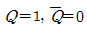
(정답률: 70%)
16. 다음 그림과 같이 RS 플립플롭에서 R 입력과 S 입력 사이에 NOT게이트를 추가하면 어떤 기능을 갖는 플립플롭인가?
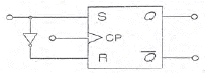
- T형 플립플롭
- N형 플립플롭
- JK형 플립플롭
- D형 플립플롭
(정답률: 66%)
17. J-K 플립플롭은 두개의 입력 데이터(Data)에 의하여 출력에서 몇 개의 조합(Combination)을 얻을 수 있는가?
- 2
- 4
- 8
- 16
(정답률: 78%)
18. 25진 리플 카운터를 설계할 경우 최소한 몇 개의 플립플롭이 필요한가?
- 3개
- 4개
- 5개
- 6개
(정답률: 83%)
19. 서로 다른 2개 이상의 신호를 하나의 통신 채널로 전송하는데 필요한 장치는?
- 멀티플렉서
- 비교기
- 인코더
- 디코더
(정답률: 79%)
20. 반가산기(Half Adder)에서 A = 1, B = 1일 경우(S(Sum)의 값은?
- -1
- 1
- 0
- 2
(정답률: 78%)
2과목: 정보통신 시스템
21. 10개의 지국을 그물형(Mesh)으로 연결하려 할 때 소요되는 최소 링크 수는?
- 25
- 35
- 45
- 55
(정답률: 89%)
22. 정보통신시스템은 크게 데이터 전송계와 데이터 처리계로 분리할 수 있다. 다음 중 데이터 전송계가 아닌 것은?
- 단말장치
- 통신 소프트웨어
- 데이터 전송회선
- 통신 제어장치
(정답률: 73%)
23. 다음 문장은 정보통신용어 중 무엇에 대한 설명인가?
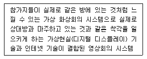
- 텔레프레즌스
- 원격화상통화
- 멀티테크
- 증강현실
(정답률: 69%)
24. 다음 중 경찰ㆍ소방ㆍ국방ㆍ비장자치단체 등 관련 기관의 무선통신망을 하나로 통합해 국민의 건강과 안전 보호, 국가적 피해 최소화 등을 위해 추진하고 있는 국가재난안전통신망은?
- PS-LTE
- 3GPP
- Wibro
- IEEE 802.11s
(정답률: 81%)
25. 정보통신에서 통신을 통제하는 규칙들을 규정해 놓은 것을 무엇이라 하는가?
- 표준기구
- 포럼
- 프로토콜
- 통싱개체
(정답률: 86%)
26. 다음 중 프로토콜의 표현요소에 해당하지 않는 것은?
- 포맷(Format)
- 순서(Timing)
- 스테이트(State)
- 프로시주어(Procedure)
(정답률: 63%)
27. 전화통신망(PSTN)에서 최번시 1시간에 발생한 호(Call)수가 240이고, 평균통화시간이 2분일 때 이 회선의 호량(Erlang)은?
- 0.1[Erl]
- 8[Erl]
- 40[Erl]
- 360[Erl]
(정답률: 85%)
28. RS-232C, V.24/28 등의 프로토콜은 OSI 7계층 중 어디에 해당하는가?
- 1계층
- 2계층
- 3계층
- 4계층
(정답률: 71%)
29. 다음 중 전자교환기의 기본 구성요소 중 공통 제어계에 해당하는 것은?
- 중앙 제어장치
- 통화로망
- 중계선 장치
- 서비스 회로
(정답률: 77%)
30. 전화통신망(PSTN)을 이용한 정보통신 서비스로 맞지 않는 것은?
- 팩시밀리
- 전화
- 인터넷
- 케이블TV방송
(정답률: 67%)
31. 다음 중 ATM(Asynchronous Transfer Mode)에 대한 설명으로 틀린 것은?
- 전송용량, 정보의 발생 형태 등이 서로 상이한 정보를 “셀(Cell)"이라고 불리는 고정길이의 블록에 넣어 전송한다.
- 셀 자체의 제어를 위한 5[byte] 길이의 헤더 구조를 가진다.
- 유료부하(Pay Load) 공간은 사용자 정보가 실리는 부분으로 53[byte] 길이를 갖는다.
- 정보전송의 처리단위를 “셀”로 규격화함으로써 고속처리가 가능하다.
(정답률: 66%)
32. 다음 중 H.264/MPEG-4 기술과 비교하여 약 2배 높은 압축률을 가지면서도 동일한 비디오 품질을 제공하는 고효율 비디오 코딩(압축) 표준은?
- HEVC(High Efficiency Video Coding)
- AVC(Advanced Video Coding)
- VCEG(Video Coding Experts Group)
- SVC(Scalable Video Coding)
(정답률: 87%)
33. FM 피변조차의 최대 주파수 편이가 60[kHz], 최대 변조 신호 주파수가 15[kHz]일 때 FM 변조지수는 얼마인가?
- 3
- 4
- 5
- 6
(정답률: 88%)
34. 우주 잡음, 대기 가스, 강우에 의함 감쇠 및 열잡음 등의 영향이 적은 전파의 창(Radio Window)에 해당하는 주파수 대역으로 옳은 것은?
- 800[MHz]이하
- 1~10[GHz]
- 10~15[GHz]
- 30[GHz] 이상
(정답률: 74%)
35. 다음 중 인터넷보호 관련 표준프로토콜에 대한 설명으로 맞는 것은?
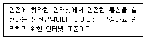
- IPSec
- MPLS
- VPN
- Fire Wall
(정답률: 79%)
36. 암호화 형식에서 4명이 통신을 할 때, 서로 간 비밀통신과 공개통신을 하기 위한 키의 수는?
- 비밀키 : 2개, 공개키 : 4개
- 비밀키 : 4개, 공개키 : 6개
- 비밀키 : 6개, 공개키 : 8개
- 비밀키 : 8개, 공개키 : 10개
(정답률: 80%)
37. 다음은 암호화에 사용되는 기술의 특징을 설명한 것이다. 무엇에 대한 설명인가?
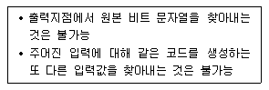
- 해쉬함수
- IPSec
- 공개키 암호화
- 대칭키 암호화
(정답률: 83%)
38. 평균고장발생 간격이 23시간이고, 평균복구시간이 1시간인 정보통신 시스템의 1일 가동률은 약 몇 [%]인가?
- 104.34[%]
- 100.00[%]
- 95.83[%]
- 91.67[%]
(정답률: 85%)
39. 다음 내용에 해당하는 것은?
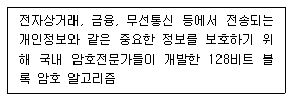
- SEED
- DES
- SHA-1
- RSA
(정답률: 81%)
40. 단순한 접근제어 기능을 넘어 네트워크 시스템을 실시간으로 모니터링하고 비정상적인 침입을 탐지하는 보안시스템은?
- IDS
- Firewall
- DMZ
- PKI
(정답률: 67%)
3과목: 정보통신 기기
41. 다음 중 최근 휴대형 정보 단말기의 기술 특성으로 가장 거리가 먼 것은?
- 대용량 메모리 IC
- 저전력 RF(Radio Frequency) 부품 기술
- 고용량 전지
- 부품의 대형화
(정답률: 89%)
42. 다음 중 소프트웨어의 정의에 해당하지 않는 것은?
- 하드웨어를 동작하도록 하는 기능과 기술
- 컴퓨터 활용에 필요한 모든 프로그래밍 시스템
- 운영체제(OS:Operating System)와 응용 프로그램
- 제어와 연산기능만을 수행하는 모듈
(정답률: 85%)
43. 통신제어장치(CCU)의 종류 중 아래의 설명에 해당하는 것은?
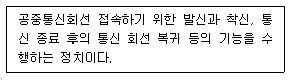
- 전처리 장치(FEP)
- 후처리 장치(BEP)
- 원격처리 장치(RP)
- 네트워크 제어장치(NCU)
(정답률: 67%)
44. 다음 중 동기식 모뎀의 특징이 아닌 것은?
- 대화형 단말기나 지능형 단말기에 사용한다.
- 음성통신회선과 광대역 통신회선에 모두 사용한다.
- 위상변동에 민감하다.
- 동기를 스타트/스톱 비트에 두어 데이터의 스페이스 마크를 감지하는 방식이다.
(정답률: 69%)
45. 회선을 보유하거나 임차하여 정보의 축척, 가중, 변환하여 광범위한 서비스를 제공하는 것은?
- CATV
- ISDN
- LAN
- VAN
(정답률: 70%)
46. 1.200[bps] 속도를 갖는 4채널을 다중화한다면 다중화 설비 출력 속도는 적어도 얼마 이상이어야 하는가?
- 1.200[bps]
- 2,400[bps]
- 4,800[bps]
- 9,600[bps]
(정답률: 79%)
47. 다음 중 라우터의 내부 물리적 구조에 포함되지 않는 것은?
- GPU
- CPU
- DRAM
- ROM
(정답률: 73%)
48. 다음 중 VoIP 기술의 구성요소로 틀린 것은?
- 미디어 게이트웨이
- 시그널링 서버
- IP 터미널
- 구내 교환기
(정답률: 79%)
49. 다음 중 멀티미디어 화상회의 데이터를 TCP/IP와 같은 패킷망을 통해 전송하기 위한 ITU-T의 표준은?
- H.221
- H.231
- H.320
- H.323
(정답률: 73%)
50. 다음 중 CCTV의 기본 구성요소로 틀린 것은?
- 촬영장치
- 헤드엔드
- 전송장치
- 표시장치
(정답률: 81%)
51. ATSC 영상방식에서 송신시스템의 입력 데이터로서 하나의 패킷(세크먼트)은 몇 [byte]로 구성되는가?
- 64[byte]
- 128[byte]
- 188[byte]
- 207[byte]
(정답률: 53%)
52. 국내 HDTV방식의 1채널 대역폭은 얼마인가?
- 4[MHz]
- 6[MHz]
- 8[MHz]
- 10[MHz]
(정답률: 82%)
53. 다음의 내용에 가장 적합한 것은?
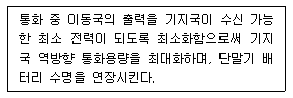
- 페루프 전력제어
- 순방향 전력제어
- 개발루프 전력제어
- 외부루프 전력제어
(정답률: 70%)
54. 다음 중 위성통신의 저잡음 증폭기로 많이 사용되는 것은?
- Parametric 증폭기
- Magnetron 증폭기
- Tunnel 증폭기
- GaAs FET 증폭기
(정답률: 69%)
55. 다음 중 부호분할다원접속(CDMA) 방식에 대한 설명으로 옳지 않은 것은?
- 위성통신에서만 사용되고 있는 다원접속방식이다.
- 의사불규칙 잡음 코드를 사용한다.
- 주파수도약방식을 사용하므로 페이딩에 강하다.
- 사용 스펙트럼의 확산으로 인접 주파수대역에 대한 간섭을 줄일 수 있다.
(정답률: 66%)
56. 셀룰러(Cellular) 방식의 이동통신에서 입력속도 9.6[kbps], 출력속도 1.2288[Mbps)일 때 확산이득은 약 얼마인가?
- 15.03[dB]
- 19.40[dB]
- 21.07[dB]
- 24.50[dB]
(정답률: 73%)
57. 다음 중 멀티미디어 압축 기술로 틀린 것은?
- MIDI
- AVI
- JPEG
- MPEG
(정답률: 80%)
58. 다음 중 MPLS(Multi Protocol Label Switching) 기반의 인터넷서비스의 특징이 아닌 것은?
- 교환기능가 제어기능이 분리되어 다양한 전달망에 적용될 수 있으며 이기종간에도 동일한 제어기능을 작용할 수 있다.
- 레이블에 목적지뿐만 아니라 서비스등급의 의미를 부여할 수 있으므로 OP QoS 제공이 용이하다.
- 레이블에 의한 터널링의 구성이 가능하므로 이를 이용한 VPN 서비스제공이 가능하다.
- 헤드처리 오버헤드가 증가되어도 기능망을 이용하므로 기존 라우터에 비해 대용량 구성이 용이하다.
(정답률: 67%)
59. 다음 중 디지털 TV 방송기술에 대한 설명으로 틀린 것은?
- 영상 및 음향신호의 압축이 용이하고 녹화 재생 시 화질이나 음질의 열화가 없다.
- 멀티미디어 서비스가 가능하다.
- 상호간섭이 적고 신호의 열화가 완만하다.
- 오류 정정기술 등을 사용할 수 있고 저장, 복제, 저장에 따른 손실이 적다.
(정답률: 63%)
60. WPAN(Wireless Personal Area Network) 기술의 화간으로 멀티미디어 기기간 연결이 많아지고 다양한 서비스가 제공되고 있다. 다음 중 WPAN 기술에 해당되지 않는 것은?
- UWB
- Zigbee
- Bluetooth
- PLC
(정답률: 78%)
4과목: 정보전송 공학
61. 다음 중 델타변조 DM(Delta Modulation)의 특징을 알맞지 않은 것은?
- 신뢰성이 높으며 표본화 주파수는 PCM의 2~4배이다.
- 표본화 주파수를 2배 증가시키면 S/Nq이 6[dB] 개선된다.
- 업다운 카운터(Up-Down Counter)가 필요하다.
- 전송 중의 에러에도 강하다.
(정답률: 64%)
62. 다음 중 나이퀴스트(Nyquist) 표본화 주파수(fs)로 알맞은 것은?
- fs = 2fm
- fs < 2fm
- fs > 2fm
- fs ≤ 2fm
(정답률: 78%)
63. 10[GHz]의 직접화간 시스템이 20[kbaud]의 데이터 전송에 사용된다. 20[Mbps]의 확산부호를 BPSK 변조시킬 때 이 시스템의 처리이득은 얼마인가?
- 13[dB]
- 18[dB]
- 27[dB]
- 30[dB]
(정답률: 63%)
64. 다음 중 디지털 변조가 아닌 것은?
- ASK
- FSK
- PSK
- SSB
(정답률: 85%)
65. 다음 중 금속막에 의한 차단유무에 따라 STP 케이블과 UTP 케이블로 분류되는 전송매체는?
- 동축케이블
- 꼬임 쌍선
- 단일 모드 광섬유
- 다중 모드 광섬유
(정답률: 72%)
66. 다음 중 동축케이블이나 광섬유 전송매체와 비교했을 때 일반적인 트위스티드 페어(Twisted Pair) 케이블에 대한 설명으로 잘못된 것은?
- 신호의 감쇠 및 간섭에 약하다.
- 아날로그 및 디지털 전송에 모두 사용할 수 있다.
- 비용이 저렴한 편이다.
- 대역폭이 넓다.
(정답률: 70%)
67. 다음 중 a-b가 순서대로 올바르게 짝지어진 것은?
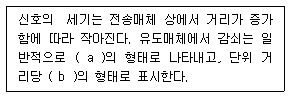
- 지수함수 - S/N비
- 로그함수 - 데시벨
- 지수함수 - Baud
- 로그함수 - BPS
(정답률: 76%)
68. 다음 중 전송로의 품질을 떨어뜨리는 비정상적인 요인으로 맞지 않은 것은?
- 펄스성 잡음
- 주파수 편차
- 순간적 단절
- 진폭 및 위상 히트
(정답률: 53%)
69. 다음 중 동축케이블에 대한 설명으로 맞지 않은 것은?
- 광대역 다중화 전송에 적합하다.
- Twisted Pair 케이블보다 주파수 특성이 우수하다.
- 동심원 구조의 사용으로 Twisted Pair 케이블보다 누화에 약하다.
- 근거리 및 소규모 회선 구간에 적용하면 비경제적일 수 있다.
(정답률: 65%)
70. 다음은 광섬유의 어느 부분을 설명한 것인가?
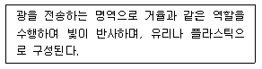
- 코어
- 클래딩
- 코팅
- AWG
(정답률: 72%)
71. 다음 보기 중 일반적으로 파장이 긴 것부터 순서대로 나열한 것은?
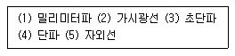
- (1)-(2)-(3)-(4)-(5)
- (2)-(4)-(1)-(3)-(5)
- (4)-(3)-(1)-(2)-(5)
- (5)-(1)-(2)-(4)-(3)
(정답률: 76%)
72. 제한대역매체를 통해 기본파와 제3고조파를 포함하는 디지털 신호를 전송하는데 필요한 대역폭은 얼마인가? (단, n[bps]로 디지털 신호를 보내고자 한다.)
- n[Hz]
- 2n[Hz]
- 4n[Hz]
- 6n[Hz]
(정답률: 75%)
73. 이종망간에 이루어지는 핸드오버 기술을 Vertical Hand over라고 하는데, 다음 중 WLAN기반의 WiFI폰-CDMA이동통신 간에 적용될 수 있는 Vertical Hand over 기술은?
- UMA(Unlicensed Mobile Access)
- MIH(Medium Independent Hand over)
- VCC(Voice Continuity Control)
- IMS(IP Multimedia Subsystem)
(정답률: 65%)
74. 다음 중 서브넷팅(Subnetting)을 하는 이유로 옳지 않은 것은?
- IP주소를 효율적으로 사용할 수 있다.
- 트래픽의 관리 및 제어가 가능하다.
- 불필요한 브로드캐스팅 메시지를 제한할 수 있다.
- 서브넷 분할을 하면 호스트 ID를 사용하지 않아도 된다.
(정답률: 84%)
75. 다음 IP 주소들이 어느 클래스에 속하는지를 알맞게 연결한 것은?
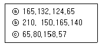
- ⓐ C클래스, ⓑ E클래스, ⓒ D클래스
- ⓐ A클래스, ⓑ B클래스, ⓒ C클래스
- ⓐ B클래스, ⓑ C클래스, ⓒ A클래스
- ⓐ A클래스, ⓑ B클래스, ⓒ D클래스
(정답률: 85%)
76. 다음 중 TCP(Transmission Control Protocol)의 주요 서비스 기능이 아닌 것은?
- 두 프로세스 간의 연결을 설정, 유지, 종료시키는 기능
- 에러 제어를 위한 메커니즘 제공
- 포트번호를 사용하여 송수신 간 다중연결 허용
- 데이터 표현장식, 상이한 부호체계 간의 변화에 대하여 규정
(정답률: 62%)
77. 다음 중 라우팅의 역할로 가장 알맞은 것은?
- 송신지에서 수신지까지 데이터가 전송될 수 있는 여러 경로 중 가장 적절한 전송 경로를 선택하는 기능이다.
- 수신지의 네트워크 주소를 보고 다음으로 송신되는 노드의 물리주소를 찾는 기능이다.
- 네트워크 전송을 위해 물리 링크들을 임시적으로 연결하여 더 긴 링크를 만드는 기능이다.
- 하나의 데이터 회선을 사용하여 동시에 많은 상위 프로토콜 간의 데이터 전송을 수행하는 기능이다.
(정답률: 82%)
78. 짝수 블록합 검사(Blocksum Check) 방식을 사용하는 데이터 전송에서 수신측에서 정확하게 수신했을 때 나오는 데이터 ###에 들어가야 할 비트는 어느 것인가?
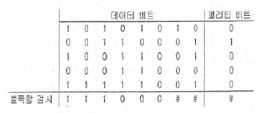
- 1 0 0
- 1 1 1
- 0 1 0
- 0 0 1
(정답률: 82%)
79. 다음 중 통신프로토콜의 기능에 해당하지 않는 것은?
- 오류제어
- 연결제어
- 메시지 전달
- 주소부여
(정답률: 47%)
80. LAN 프로토콜 중에서 Tokon Ring방식과 CSMA/CD(Ethernet)방식이 서로 경쟁하다가 CSMA/CD(Ethernet)로 통일된 가장 중요한 원인은 =무엇인가?
- 저렴한 가격
- MAN과의 정합 용이성
- 넓은 대역폭
- 확장성(Scalability)
(정답률: 80%)
5과목: 전자계산기일반 및 정보통신설비기준
81. 기억된 내용의 일부를 이용하여 기억되어 있는 데이터에 직접 접근하여 정보를 읽어내는 장치는?
- 가상기억장치(Virtual Memory)
- 연관기억장치(Associative Memory)
- 캐시 메모리(Cache Memory)
- 보조기억장치(Auxiliary Memory)
(정답률: 72%)
82. 다음 중 동적 RAM(Dynamic RAM)의 특징에 대한 설명으로 틀린 것은?
- 전하의 양을 측정하여 저장 논리 값을 판단한다.
- 전하의 방전 때문에 주기적으로 재충전(Refresh)해야 한다.
- 1비트를 구성하는 소자가 적어서 단위 면적에 많은 저장장소를 만들 수 있다.
- 1비트를 구성하는 소자가 적어서 메모리 액서스 속도가 정적 RAM(Static RAM)보다 빠르다.
(정답률: 65%)
83. 다음 중 순차파일(Sequential File)의 특징이 아닌 것은?
- 레코드가 키 순서로 편성되므로 처리 속도가 빠르다.
- 어떠한 입ㆍ출력 매체에서도 처리가 가능하다.
- 이전의 레코드를 탐색하려면 파일을 되돌리면 된다.
- 필요한 레코드를 추가하는 경우 파일 전체를 복사해야 한다.
(정답률: 64%)
84. 다음 논리회로에 의해 계산된 결과 X는?
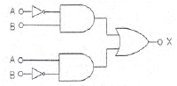
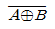
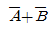
- A⊕B
- A・B
(정답률: 78%)
85. 효율적인 입ㆍ출력을 위하여 고속의 CPU와 저속의 입ㆍ출력장치가 동시에 독립적으로 동작하게 하여 높은 효율로 여러 작업을 병행 수행할 수 있도록 해줌으로써 다중 프로그래밍 시스템의 성능 향상을 가져올 수 있게 하는 방법은?
- 페이징(Paging)
- 버퍼링(Buffering)
- 스풀링(Spooling)
- 인터럽트(Interrupt)
(정답률: 66%)
86. 다음 중 선점형 스케줄링(Preempitive Process Scheduling)에 해당하지 않는 것은?
- SJF(Shortest Job First) 스케줄링
- RR(Round Robin) 스케줄링
- SRT(Shortest Remaining Time) 스케줄링
- MFQ(Multi-level Feedback Queue) 스케줄링
(정답률: 53%)
87. 다음 중 파일(File)의 개념을 바르게 표현한 것은?
- Code의 집합을 말한다.
- Character의 수를 말한다.
- Database의 수를 말한다.
- Record의 집합을 말한다.
(정답률: 79%)
88. 다음 명령의 수향 결과값은?
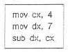
- 1.75
- 3
- 11
- 28
(정답률: 81%)
89. 마이크로프로세서로 구성된 중앙처리장치는 명령어의 구성방식에 따라 2가지로 나눌 수 있다. 이중 연산 속도를 높이기 위해 처리할 수 있는 명령어 수를 줄였으며, 단순화된 명령구조로 속도를 최대한 높일 수 있도록 한 것은?
- SCSI(Small Computer System Interface)
- MISC(Micro Instruction Set Computer)
- CISC(Complex Instruction Set Computer)
- RISC(Reduced Instruction Set Computer)
(정답률: 72%)
90. 다음 중 컴퓨터 프로그램의 명령에서 연산자의 기능이 아닌 것은?
- 함수연산 기능
- 전달 기능
- 제어 기능
- 인터럽트 기능
(정답률: 62%)
91. 방송통신설비의 기술기준에 관한 규정에서 정의한 ‘특고압’은?
- 7,000볼트를 초과하는 전압
- 5,000볼트를 초과하는 전압
- 2,500볼트를 초과하는 전압
- 직류는 750볼트, 교류는 600볼트를 초과하는 전압
(정답률: 78%)
92. 다음 중 방송통신설비가 다른 사람의 방송통신설비와 접속되는 경우에 그 건설과 보전에 관한 임 등의 한계를 명확하게 하기 위하여 설정 하여야 하는 것은?
- 분기점
- 분계점
- 국선분계점
- 국선분기점
(정답률: 79%)
93. 전기통신설비를 이용하거나 전기통신설비와 컴퓨터 및 컴퓨터의 이용기술을 활용하여 정보를 수집, 가공, 저장, 검색, 송신 또는 수신하는 정보통신체제는 무엇인가?
- 부가통신망
- 전기통신망
- 정보통신망
- 전자통신망
(정답률: 67%)
94. 다음 중 공사 도급의 정의를 가장 바르게 설명한 것은?
- 발주자가 의뢰한 공사의 설계도서를 작성하고 이에 따라 공사의 공정을 기획 작성
- 공사업자가 공사를 완공할 것을 약정하고, 발주자가 이의 대가를 지급할 것을 약정하는 계약
- 용역업자가 공사의 시방서를 작성하고 이에 따라 공사기자재를 준비
- 공사업자가 용역업자의 설계도서와 공사시방서에 따라 공사를 시공
(정답률: 77%)
95. 다음 중 정보통신공사업법령에 의한 ‘용역’의 역무에 해당하지 않는 것은?
- 설계업무
- 시공업무
- 감리업무
- 유지관리업무
(정답률: 54%)
96. 다음 중 전기통신사업법에서 규정하는 “전기통신”에 대한 정의로 틀린 것은?
- 유선 방식으로 부호ㆍ문언ㆍ음향 또는 영상을 송신하거나 수신하는 것
- 무선 방식으로 부호ㆍ문언ㆍ음향 또는 영상을 송신하거나 수신하는 것
- 광선 방식으로 부호ㆍ문언ㆍ음향 또는 영상을 송신하거나 수신하는 것
- 전기적 방식으로 부호ㆍ문언ㆍ음향 또는 영상을 송신하거나 수신하는 것
(정답률: 70%)
97. 전기통신사업자는 법의 절차에 따라 통신자료제공을 한 경우에는 그 사실을 기재한 통신자료제공대장을 몇 년간 보존하여야 하는가?
- 10년
- 5년
- 2년
- 1년
(정답률: 51%)
98. 다음 중 별정통신사업에 해당하는 것은?
- 전기통신회선설비를 설치하고 이를 이용하여 특별통신 역무를 제공하는 사업
- 기간통신사업자로부터 전기통신회선설비를 임차하여 기간통신역무외의 전기통신역무를 제공하는 사업
- 기간통신사업자의 전기통신회선설비 등을 이용하여 기간통신역무를 제공하는 사업
- 특별히 정한 전기통신설비를 설치하고 이를 이용하여 기간통신역무외의 특정 전기통신역무를 제공하는 사업
(정답률: 44%)
99. 다음 중 정부가 정보통신 표준화를 추진하는 목적으로 옳지 않은 것은?
- 정보통신의 효율적인 운영
- 정보통신 기술인력의 양성
- 정보의 공동활용을 촉진
- 정보통신의 호환성 확보
(정답률: 76%)
100. 다음 중 정보통신 감리에 대한 설명으로 옳지 않은 것은?
- 발주자는 용역업자에게 공사의 감리를 발주하여야 한다.
- 감리는 품질관리, 시공관리 및 안전관리 지도 등에 관한 발주자의 권한을 대행한다.
- 감리원은 고용노동부장관의 인정을 받은 사람을 말한다.
- 감리원은 설계도서 및 관련 규정의 내용대로 시공되는지를 감독한다.
(정답률: 69%)